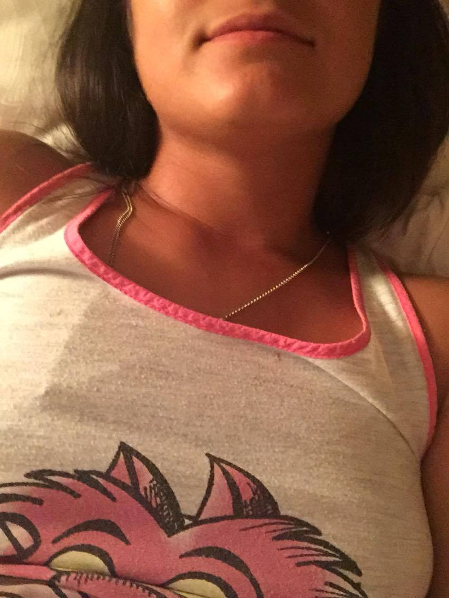
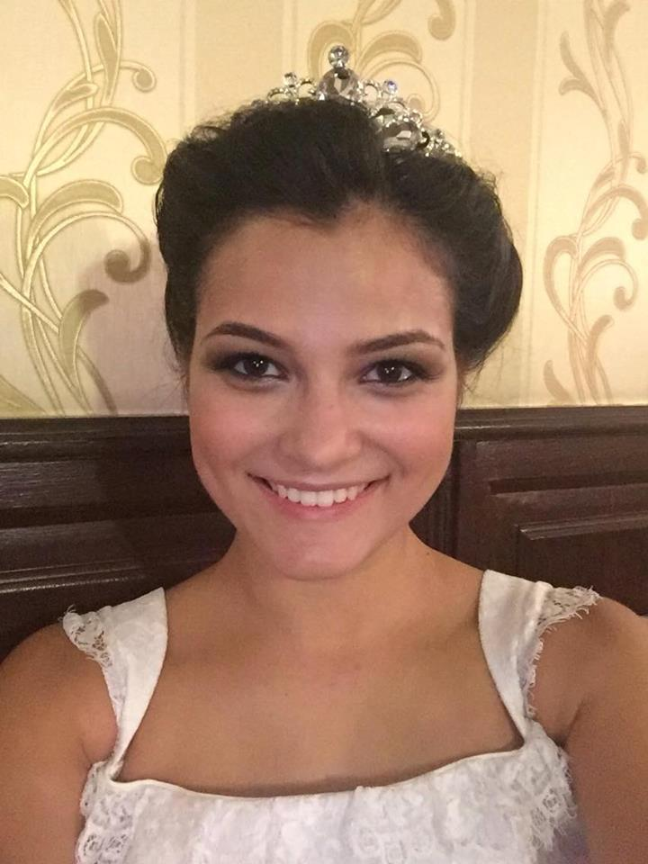
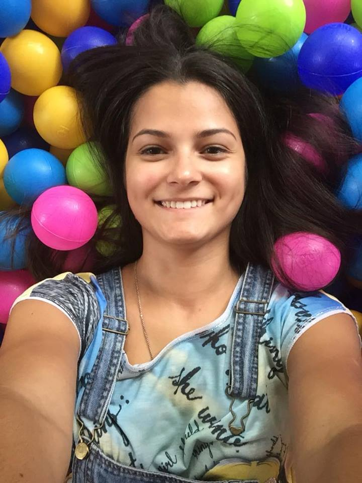
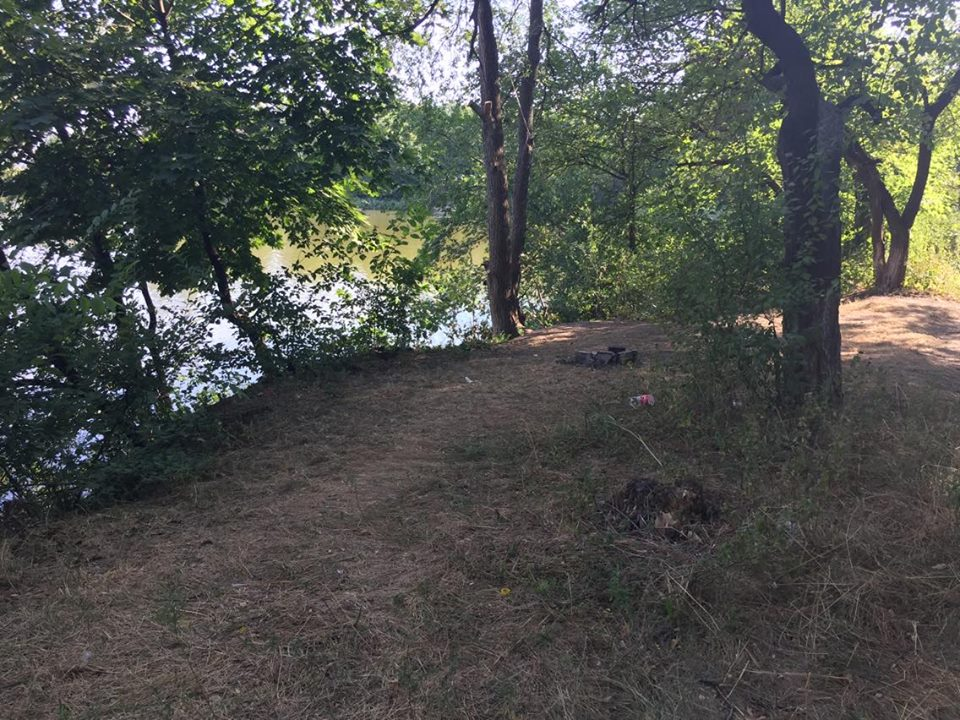

Я полюбила вас
я назову все что мне запомнилось очень ярко. первый взгляд в твои глаза, когда я сняла очки. первое твое прикосновение и дрожь от него. фраза "я полюбила вас" глядя тебе в глаза и как потом ты опустил их и начал ходить вокруг меня, что сделало признание еще сложнее, но я справилась. первая поездка в машине, ты как будто сто раз там сидел и вот в сто первый сел. первый поцелуй от которого перехватило дыхание на пару секунд, и поэтому была маленькая задержка (губы были в миллиметре друг от друга) а потом все продолжилось. а потом как ты вышел из машины. приготовление чая и твои глаза когда ты сказал что мы как старые приятели сбежавшие от жен. твои рассказы с горящими глазами и частые поцелуи. изображение "просто кролик был очень воспитанный" и как ты при этом поправил очки. объятия сзади (ааахххххх). как ты мягко успокоил мою паранойю. поцелуй через водительскую дверь. мои прикосновения и как ты кусал мои пальцы. поцелуй со страстью в машине. чмок на прощание и твой выход из машины.и конечно же постоянно твоя улыбка а еще как ты на меня смотришь и я от этого взгляда таю как мороженное и иногда казалось что действительно упаду у тебя свое выражение любви и я к нему с каждым днем все больше и больше привыкаю. так что я уже понимаю тебя. это не так как в первый раз, после случайной встречи может быть будет и проще, но это будет наше первое испытание... и я так хочу его пройти! чтобы осенью встретив тебя снова подумать "да! мы молодцы! мы сделали это! и я снова его вижу и чувствую!" я все же надеюсь что ты вернешься с веранды. я так тебя жду! но если выделить из всего этого множество моментов 5, то это будут эти - первый взгляд, первое прикосновение, мое признание, все поцелуи, кролик:)
как здорово!... я могу рассказывать тебе все порывы фантазии и ты их поймешь. не посмотришь на меня удивленно и не скажешь "вот это да... что там у тебя в сознании происходит". лежу и понимаю, что ты меня многому научил... раньше, в начале общения, фраза "я тебя не хочу" расценивалась бы как оскорбление и я думала бы что не достаточно хороша для тебя. но сейчас... это какой-то другой смысл... это как дополнение или приложение, которое можно использовать, а можно отбросить его и ничего не поменяется. потому что есть нечто большее чем близость тел (повторяю твои слова, когда ты описывал мечту про домик в горах) меня тянет к тебе на всех уровнях. (духовный и телесный) мы друг друга понимаем с каждым днем все больше. и я понимаю что ни за что не хочу это заканчивать. никогда. я только нашла для себя такое сокровище и даже не хочу думать ни о чем плохом. а кстати плохого может и не быть, знаешь почему? благодаря большому пониманию. ведь у людей конфликты в основном из-за того что не слышат друг друга и не хотят понимать а еще с тобой так приятно все делать. спорить, что-то обсуждать. я уже писала об этом, но почему-то хочется повториться. мне кажется за вчерашний день и вообще за эти две недели я повзрослела
и мечтала сегодня. вспомнила как ты писал про снег, витрины, мои глаза на фоне белого. а я представляла тебя... улыбающегося, в шапке. и ты так смотришь на меня... и гладишь по носику(как ты это обалденно делаешь) и знаешь осознание чего в этот момент было? что у нас впереди еще столько интересного и классного! хочется жить!
Страх
МОМЕНТЫ
НИЧЕГО ПЛОХОГО
ТАКОЙ КАК ТЫ
есть догадка, что ты достиг своей цели и охладел. ищи эту точку отправления. ищи новые возможности. переродись как феникс в конце концов. это нормально, такое ощущение всегда есть и будет. а цель была большая, соответственно и холод большой. я надеюсь ты помнишь все что я тебе говорила, надеюсь что ты веришь мне и надеюсь что у тебя получится это сделать. надо пересилить себя, заставить. надо поработать. давай я помогу тебе. попробую максимально все сделать что от меня зависит. в сегодняшнем разговоре с самого начала чувствовалось что-то. я очень надеялась что пройдет, но ошиблась. мне нужно было что-то делать, а я не сделала. и очень сожалею сейчас. если я права в своих догадках, то ты мне сам сегодня все говорил и намекал об этом, но дурная моя голова!!!! дурная как пробка!!!
хоть мы и понимаем друг друга, сущности ведь у нас разные... как бы понять твой фокус хоть немного... мне бы тогда пришло решение сразу! цель блин... цель... то чувство, когда беспомощный... потому что в силу своих мозгов и женского начала не можешь нормально понять ситуацию....
целью была я. значит чтобы выбраться и ничего не потерять целью должна снова стать я. нет ничего идеального, думай что еще можно в меня вложить. можно многое вложить блин!! хоть всю вселенную! бредовые идеи посещают. надо снова отдохнуть и подумать. если бы можно было бы выйти на улицу!... как в своем доме Ты чувствуешь... ты любишь... ты изводишь себя так же как делаю это я. Ты научилась быть больше чем просто книжные истории про любовь. Может это и была моя цель. Здорово ощущать это и понимать. Меня гложет один вопрос... что я тебе могу дать? у тебя внутри уже и так целая вселенная. разве можно дать что то больше чем эта вселенная. я не знаю. я буду старасться продолжать искать это. Я буду работать над тобой... ведь тогда росту и я. прости меня за эти всплески. может их ты и полюбила. меня еще никто не любил за них. меня только ненавидели за это. наверно поэтому я и прибываю в легкой расреряности от того что неожидал что меня тоже пробъют
наглядные волны в общении. вчера и сегодня. мне иногда кажется что ты учишь меня им. или просто пытаешься специально доконать, чтобы я сдалась. или проводишь на мне эксперимент и улыбаешься когда я что-то пишу тебе в ответ. какой-то метод кнута и пряника. и вот сейчас я пишу тебе свои мысли и не знаю как ты отреагируешь... если раньше как-то было что-то понятно, то сейчас ничего... и плохая волна так душит. как будто пытается убить. а я как любое живое существо хватаюсь за жизнь, за соломинку и пытаюсь выжить. а когда хорошие волны, то тогда взлетаю, но уже есть страх. боюсь радоваться, потому что в любой момент могу шмякнуться об землю.
а знаешь что я еще подумала? что я жираф! ?? что хватит мне распускать сопли. в какой-то момент стало понятно почему ты говорил что не будет у нас ничего нормального и скоро все закончится. ты говорил о своих волнах которые иногда тяжело пережить.похоже что тебе хотелось открыться, но так чтобы тебя поняли. знаешь, как будто глаза постепенно открываются на какие-то вещи. что раньше не видела, сейчас понимаю. и похоже что когда в тебе просыпается страсть ты становишься каким-то гадом что ли. и теперь понятно почему ты так боишься, чтобы этот гад, темная сторона внутри тебя не испортила все то, что создается хорошей стороной. и совмещать ты их не можешь по каким-то причинам. и возможно на встречах больше преобладает темного с которым ты борешься. а так переписка это безопасно и особо переключать стороны не приходится. неужели твоя вот та темная сторона настолько ужасная, что действительно будет крах? расскажи мне. и если бы можно было бы обезвредить эту страсть, то ты бы встретился со мной... и встретиться хочешь осенью чтобы у тебя все поутихло и чтобы не было риска и поэтому холод включать легче и проще потому что... потому что потому напиши мне, правильно я тут размышляю или нет? блин! капец! ну все же стало понятно! и то что ты хотел попросить одеть что-то подлиннее о, у меня есть паранджа, может пойдет?))) в дубае купила:) я пыталась пошутить конечно для меня встречи вообще по другому проходят... знаешь, вот мозги не работали, просто кошмар! в вот теперь вижу все свои косяки!! и волны. они и раньше были, но только ты не показывал их полностью, как-то прятал. но как у тебя получалось так? наверное потому что не была достигнута цель - мое понимание.
капец! я теперь понимаю тебя еще больше!
Я растворяюсь в тебе
кажется я еще летаю:) и только слегка спустилась на землю:) ну иначе если не спущусь, поведут к врачу:) чтобы выяснить причину неадекватного поведения:) с чего бы начать... как бы выложить в текст то, что в голове не могу... твой запах сводит с ума и не дает сосредоточиться... но я все равно попытаюсь я растворилась в тебе... причем произошло это постепенно. я чувствовала как сливаюсь с тобой... это нереальный поток энергии, силы. но при этом какое было спокойствие внутри, никакого волнения, ровное сердцебиение (ну в некоторых моментах было не ровное ??), как будто мой организм и мое сознание говорили мне "это все так, как должно быть. просто наслаждайся." мое все нутро было готово к такому единению а я об этом даже не подозревала. мы как будто открывали друг друга для себя же. чтобы быть еще ближе, чтобы даже стать чем-то необъяснимо целым. когда я полностью дотронулась до тебя без одежды, это был тот момент, когда я абсолютно растворилась.... ты впечатался в меня, физически смешался со мной. твой запах на мне, он впитался, проник в меня и закрепился там. ощущения твоего тела закрепились во мне. ты просто слился со мной, а я слилась с тобой. и это невероятные ощущения. и не важно что мы что-то сделали или чего-то не сделали физически. зато морально мы конкретно соединились я сейчас чувствую как от солнечного сплетения у меня идет что-то типа замка. и переплетается это все и закрепляется с твоей точно такой же невидимой ниточкой( какая тут ниточка, тут целый канат, а то и крепче. представляется это из металла) ты стал мне по-настоящему близким во всех смыслах. и духовно и физически.а эти волны... то начинается жар, то остываешь... спасибо тебе что научил так чувствовать! смотреть в твои голубые глаза, чувствовать такую теплоту, нежность и любовь. таять в твоих руках, доверять тебе абсолютно на 100% во всем. ничего не бояться и потихоньку сливаться с тобой боже мой, какое это чувство и какие это ощущения... что-то неземное теперь понимаю когда ты говорил, что катастрофически мало времени. но знаешь, пусть лучше немного но я еще это все почувствую так приятно прижиматься к тебе! как невероятно целовать тебя! переплетаться руками, часто дышать и наслаждаться твоим запахом. наслаждаться тобой! целовать тебя в шею и чувствовать как тебе это приятно. гореть от твоих прикосновений, поцелуев и взгляда находиться в другом измерении вместе с тобой. я не сама там высоко летала, а вместе с тобой. твоя волна в машине. у меня было абсолютное спокойствие. пробовала к тебе подъехать и понимала что ты так прекрасен в этом настроении. ты прекрасен в обеих волнах у меня была возможность энергетически дать тебе свою любовь и как это было прекрасно отдавать. и как прекрасно было получать от тебя тоже самое. хотя головой я ничего не думала, все происходило как-то само собой и даже когда ты пошел смотреть время, когда решил остановиться, ты сделал это так нежно, чтобы ничего не нарушить, то что было внутри нас и что летало в воздухе. и как это прекрасно быть перед тобой такой естественной
Наш лес
знаешь, сижу на площадке сейчас... и чувствую как все здесь пропитано тобой! я уже думала, что может если бы я была в старом доме, то мне было бы тяжелее. я бы ездила сюда специально. меня бы тянуло сюда постоянно. а так я просто тут живу! каждую минуту нахожусь в том месте где все начиналось. каждый день проезжаю мимо нашего места, где мы первый раз нормально, не мимолетно увиделись. поворачиваю на прагу и каждый раз вижу как ты там сидишь с листиком в руках. гуляю с детьми, еще шаг, и я наступлю на дорожку, которая ведет к нашему месту. я счастлива! конечно я очень скучаю по тебе! но благодаря тому, что я нахожусь в нашем месте(спасибо судьбе за это!) мне так хорошо. и я чувствую как живу и дышу тобой. невероятные ощущения...знаю одно, что есть правила, а есть жизнь, в которой не получится жить строго по правилам. поступаю по своему соображению, по тому что чувствую.
Я люблю тебя
состояние было отвратительное. особенно когда ночью сидишь на веранде и понимаешь, что хорошо что рядом сидит подруга. хоть ей ничего не расскажешь, но все равно сдерживает мои мысли, эмоции. я вчера много говорила о чем-то пустом ей. просто болтала потому что так было легче, так я бросала пыль в глаза, чтобы она ничего не заметила. я вчера писала тебе обо всем что происходило. и не для того чтобы показать, что я такая занятая и деловая. мне хотелось делиться с тобой всем. и знаешь, даже если получаются такие дни, я все равно думаю о тебе. хочу написать. стою на красном и пишу хотя бы пару слов. потом паркуюсь и дальше продолжаю писать. ну и пусть я куда-то опоздаю, я хочу тебе написать! всегда хочу! и ответ получить тоже и прочитать. если вдруг отвлекаю от работы, просто скажи мне "опоссум свали в канаву, мне надо поработать:)" и я на время свалю, а потом буду ждать от тебя позывной, что ты уже освободился и что можно рассказать тебе что-нибудь. и то что так произошло есть моя вина. прости пожалуйста! я забываю о том, что мы знаем друг друга только месяц и что нужно все объяснять, потому что мертвый текст. и даже если мы находимся рядом и смотрим друг другу в глаза все равно надо. но если рядом, то это проще сделать. мне кажется что мы друг друга знаем в совершенстве, вот и говорю тебе все так, будто ты сразу словишь в каком направлении идут мои мысли. но для такого нужно время. и я должна учитывать твою реакцию на слова. и видишь, тоже бывает не улавливаю твои мысли и сама получаю.
я люблю тебя! в любом состоянии, при любых обстоятельствах! с такой реакцией и с другой. во всех твоих волнах и хороших и плохих. ты мой любимый минусик, без которого я не могу! вот поэтому когда я прочитала что ты написал, мне сознание начало рисовать жуть. знаешь, будто добровольно соглашаешься на ад, потому что любишь. готов пожертвовать своими желаниями и мечтами ради человека, если ему действительно 100% это нужно. не хочется страшно это делать! хочется все исправить! ревешь, но смиряешься. один в темноте, слезы текут, вокруг летают демоны, которые смеются над тобой и радуются твоей трудности. а ты все равно идешь вперед. это как раз тот момент, когда уже ничего не поможет. и еще музыку такую вспомнила, включила, прочитала от тебя и под нее сознание понеслось. дышать как-то было тяжело. хотелось кричать со всей силы. но чтобы никто не слышал и не видел. сразу побежала в душ, потому что бросило в жар и нужно было освежиться, чтобы хоть как-то нормально соображать. хорошо что у детей был тихий час. прости, может мне не стоило это все писать, но я хочу чтобы знал что я чувствую и как ты мне дорог
Тараканы
Думал пообижаться и покормить своих тараканов и не писать тебе... а потом так хорошенько посидел подумал. И понял что выхода с подводной лодки всеравно нет. и даже если ты там сейчас с родными то мне как то на это плевать. главное что я мыслями сейчас с тобой. и мне так кайфово от этого. что я хотел бы тебе написать сейчас. когда ты не рядом но так близко в моем сознании. Наверно то что ты удивительный человек. очень мне нравишься и я восхищаюсь тобой. Правда буквально два часа назад я сидел на пляжу и думал о том, чем ты меня так задела и почему я тебя полюбил всем сердцем. Я не нашел ответа. А может это как смысл жизни. Ведь люди ищут его уже на протяжении тысячилетий и четкого и ясного ответа до сих пор никто не придумал. Так и я. Ищу ответ там где его просто нет. вернее наверное ответ есть как и в смысле нашей жизни, просто наш разум еще не готов это осознать или мы еще не так сильно развиты. Я помню как проводил ручкой по твоим рукам. Вот сейчас вспоминаю этот момент и рям чувствую на кончиках пальцах шелк твоей кожи... а потом были волосы... Это все позволяет мне ощущать этот мир не плоско как на бумаге а полноценно как 3d игра что ли. ты оживляешь его и даешь ему новое измерение. измерение которое увы не воспринимает разум но так ярко чувствует сердце наверное именно этот разрыв непонимания между ними двумя и вызывает во мне эти волны. Но мы уже давно определили что не отрицательная не положительная волна не является лучшей. они каждые хороши по своему. и вчерашний мой заскок был больше необходим мне что бы еще больше убедится как я тебя люблю. с любой другой я бы уже давно пропал на неделю или бы больше. я бы морозился и не выходил на связь... но тут это просто не возможно.и не твои слова которые ты мне тут писала (кстати я читал их сразу только не отмечал что сообщение прочитанно ;)) виной тому что я сдался... я чувствовал какой то необычайный посыл радиоволн. наверное ту черную материю за которой все так гоняются. Я не знаю что тебе еще можно сказать по результату прошедшего нашего месяца с хвостиком. Он прошел у меня как один день! И если жизнь пройдет точно так же я ничуть не пожалею. Потому что ты придаешь скорость моему внутреннему я. Скорость света и движения мысли. Которая отражается в твоих лукавых глазах.мне кажется, что эта комнатка - это целый мир:) с уютным домиком и садом. с американскими горками и сладкой ватой. с домиком в горах и лас вегасом))) главное что все за этой потайной дверью прекрасно!))